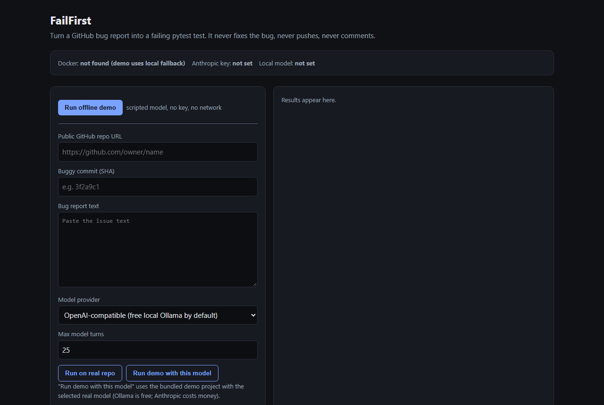
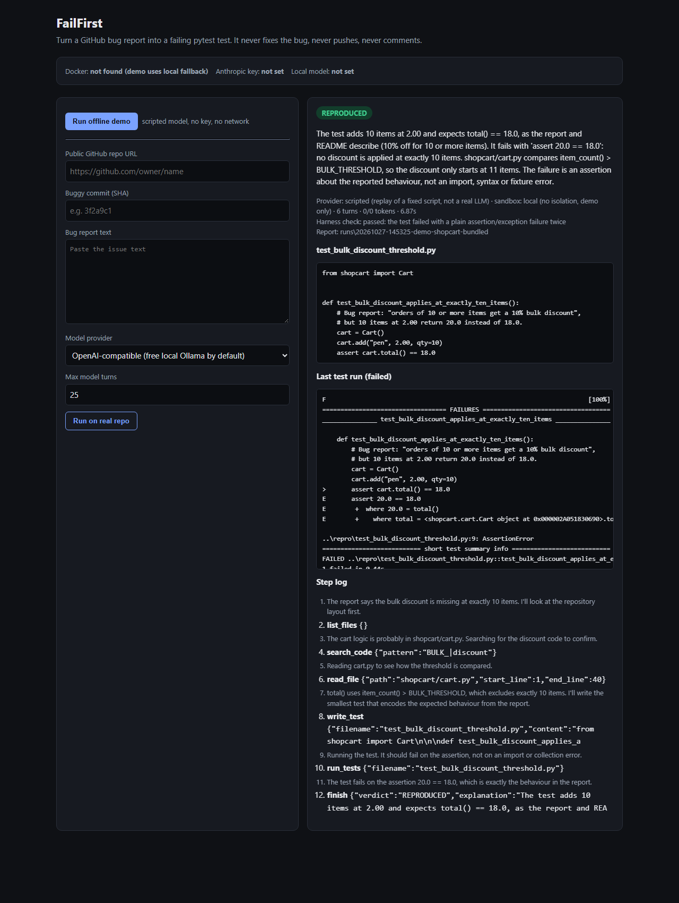

Give it a public GitHub repo, the buggy commit and a bug report. It explores the code in a sandbox, writes the smallest failing pytest test that captures the bug, runs it, and reports REPRODUCED, NOT_REPRODUCED or NEEDS_INFO. It never fixes the bug, never pushes and never comments.
The model only gets six tools. It never gets a shell, the network or write access to the repository.
list_files, read_file and search_code.write_test) and runs it (run_tests).report.md, run.json and the test file, plus budgets for steps, tokens, cost and time.GitHub Pages can't run Python or an AI model, so this page replays real recorded runs. The data is copied unchanged from each run's run.json. All three are on the bundled demo project, a tiny shopping cart with a seeded off-by-one bug.
Running failfirst ui serves this page on 127.0.0.1 only. Use it to run the offline demo, try a real model, or run a real repository.


The offline demo needs only Python. The full setup guide (Ollama, Docker, real repos) is in the README.
git clone https://github.com/Omkar210404/Fail-First cd Fail-First python -m venv .venv .venv\Scripts\activate # macOS/Linux: source .venv/bin/activate pip install -e . failfirst demo # scripted model, no key, no network failfirst ui # web app at http://127.0.0.1:8765